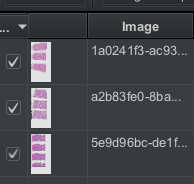
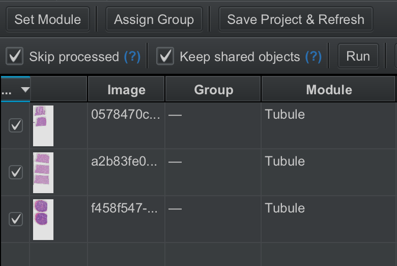
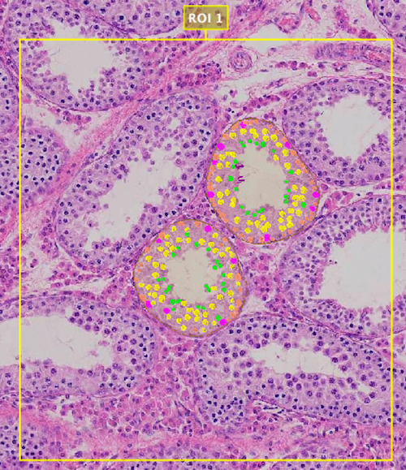
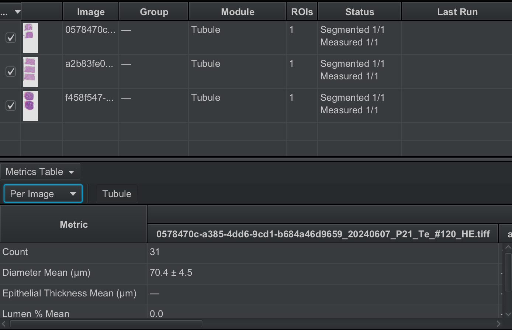

Usage (Tutorial)
Making a project and adding images
A project is a collection of slide images with data saved for each slide. You'll want to create a project to save any annotations that are made if you want to revisit the work or keep a record.
To create a project, in the left sidebar, have the Project tab open. Press Create project. Select any empty folder or create a new one, and press Open. This will not actually create a project until you add an image, so let's add one.
Local Images:
In the Project tab, press Add images to open a prompt. QuPath will ask you
to select images on your computer to add to the project.
Cloud Images:
In the menu bar, open Extensions → ReproPath →
Open from Cloud. If you've correctly set up the connection, you should see a list of slides.

Search for any slide you want, select one or more slides, and press Add to Project.
To revisit a project: inside the Project tab, press Open project, navigate
to the folder where you saved your project, and open the project.qpproj file.
Running a project workflow
This section will guide you through an example workflow.
1Create ROIs (regions of interest) to be analyzed.
Open a slide image in the viewer, then select the ReproPath ROI tool in the tool bar.

Click anywhere in the viewer to place a default-sized ROI, or hold and drag to place a custom-sized ROI. Results are best when the ROI is approximately square.
Create ROIs for each slide you want to analyze.
2Open the ReproPath menu by navigating to the menu bar and selecting Extensions → ReproPath → Open ReproPath. Open the Project tab.
The menu should look as follows:

You may need to press Save Project & Refresh to update the display.
3Select the slide images you want to analyze by checking the boxes next to each slide.

4Assign a Module to the selected slides by pressing Set Module and choosing an option.
With a module selected for each slide, the table will look as follows:

5Press Run to process all ROIs for all selected images.
This may take a while! Processing takes up to 2 minutes per ROI, but actual processing time can vary wildly depending on your internet connection speed and ROI size.
The status column and loading bar update with live progress.
6Once finished, results are available for visual inspection.
Open slides in the viewer to inspect visual results. You can see what objects were detected in each ROI.

The Project tab also displays a table with metrics computed from the object masks.

To understand each of the reported metrics and how they are calculated, consult the glossary.
Project metrics can additionally be exported to an Excel sheet by pressing the Export button in the extension menu.
This concludes the basic usage tutorial. See the advanced usage section for more.